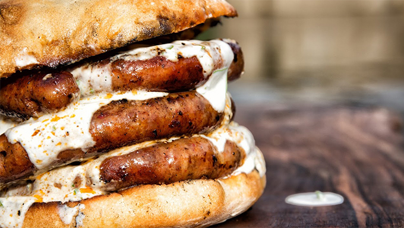
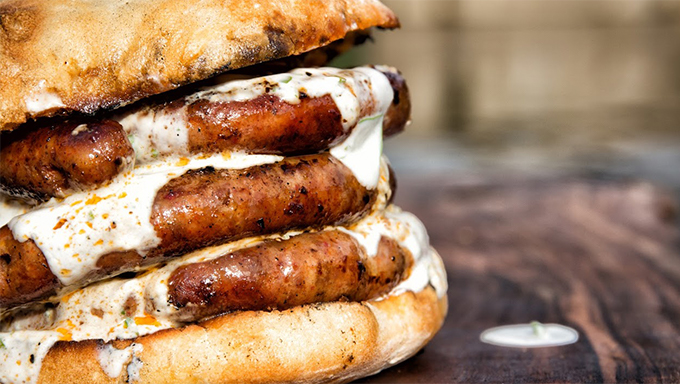

Le Hot Dog le plus savoureux au monde avec une incroyable saucisse maison qui est grillée directement sur charbons, superbes oignons caramélisés qui sont également cuits au feu + moutarde maison, et légumes biologiques frais!
Ingrédients: